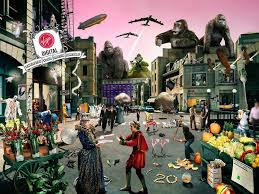

Моё хобби - это игра на аккустической и электрогитарах. Рок музыкой я начал увлекаться еще в
детсве, а главный инструмент в рок-музыке это, несомненно, гитара. При том, что слушать музыку
начал лет двадцать назад играть на инструменте начал недавно (около двух лет), но при этом
успехи в обучении присутствуют. Сначала, наверное, как и у мнгогих, выбор был в сторону электрогитары,
но все больше погружаясь в теорию музыки появилось желание приобрести аккустическую гитару. На аккустической
гитаре также строится большое количетсво музыкальных произведений.